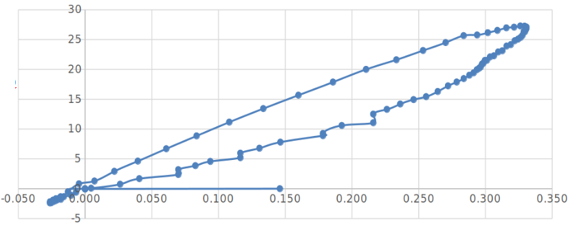

Weekly Report – Vehicle Dynamics and Data Acquisition Error Analysis
February 16, 2026
Investigating transient effects in vehicle response and their impact on dataset construction for Imitation Learning
This week, we continued a detailed analysis of the problems identified in the data acquisition pipeline. Following the defined process flow, we focused on understanding the relationship between control signals and the actual vehicle response, and on proposing pre-training mitigation strategies.
Generation of Weak DAgger and Strong DAgger Datasets
Implementation of the DAgger (Dataset Aggregation) algorithm in two modalities to enhance model robustness:
- Weak DAgger: Sporadic expert consultation only in cases of high uncertainty.
- Strong DAgger: Systematic expert consultation throughout the entire trajectory to maximize coverage of the state space.
Objective: To compensate for the distribution of states visited by the learner with the expert policy, thereby reducing covariate shift error.
Identification of Error Sources
A systematic analysis of the discrepancies between the sent command and the actual execution, including:
- Latency in steering data acquisition (0.5s previously identified).
- The "backlash" effect between the steering command and the vehicle's heading.
- Noise in consecutive measurements with identical visual content.
Implementation of Noise Injection
Development of data augmentation techniques through controlled noise injection:
- Gaussian noise in images to simulate varying lighting conditions.
- Perturbations in the steering angle to simulate actuator imperfections.
- Simulated dropout in sequences to improve temporal robustness.
These techniques aim to improve model generalization and reduce the zigzagging observed on straight roads.
Link to Identified Problems:
• DAgger directly addresses incorrect turns by exposing the model to recovery states.
• Identifying error sources focuses on lane departures caused by temporal misalignment.
• Noise injection is specifically designed to mitigate zigzagging resulting from overgeneralization.
1. Acquisition
(camera + steering)
2. Processing
(Pygame filter)
3. Storage
(image + value)
4. Vehicle Response
(actual heading)
5. Training
(model)
Error Analysis by Phase:
Phase 2 (Processing - Pygame):
- Undocumented Filter: The steering acquisition function in Pygame applies a low-pass filter that introduces a phase delay.
- Effect: The recorded values do not correspond to the image capture instant, but rather to a smoothed version of previous commands.
Phase 4 (Vehicle Response):
- Mechanical Backlash: Play in the steering mechanism causing a difference between the requested wheel angle and the actual one.
- System Inertia: The vehicle does not respond instantaneously to steering changes, creating a temporal lag.
- Integrator Effect: Small errors in the turn rate accumulate in the heading (similar to drift in accelerometers).
heading_real(t) = ∫ (ω_command(t-τ) + ε_mechanical + noise) dt
Where τ ≈ 0.5s is the total identified latency, ε_mechanical represents the backlash, and the noise includes vibrations and measurement errors.
Process Flow Conclusion: The model is learning an incorrect correspondence: it learns to associate the image at time t with the steering value that will be present at t+τ, causing the observed oscillatory behaviors.
"Backlash" Effect Between Steering Command and Heading
Detailed analysis of the driving logs reveals hysteresis in the directional response:
Time (s) | Steering Command | Actual Heading | Difference
0.0 | 0.10 | 0.02 | -0.08
0.1 | 0.10 | 0.04 | -0.06
0.2 | 0.10 | 0.06 | -0.04
0.3 | 0.10 | 0.08 | -0.02
0.4 | 0.10 | 0.10 | 0.00
0.5 | 0.10 | 0.12 | +0.02 (overshoot)
Characteristics of the Effect:
- Dead Zone: Small changes in steering (<0.02) produce no response in heading.
- First-Order Delay: The heading follows the command with an RC (resistance-capacitance) type dynamic.
- Overshoot: At the end of a turn, the heading temporarily exceeds the command before stabilizing.
Implication for the Dataset: Images taken during the first 0.4s of a turn have a high steering command but a low heading. If the model learns this association, it will systematically under-steer in real curves.
Experimental Validation:
Step response tests were conducted by applying a constant steering command and recording the heading. It was confirmed that the system behaves as a first-order system with a time constant T ≈ 0.25s and a pure delay δ ≈ 0.1s.

[Graph: Integration of Turn Rate vs. Actual Steering]
Figure 1: Comparison between the integrated angle (ω dt) and the measured steering value.
Analogy with Accelerometers: Integration Error
When calculating the accumulated steering angle by integrating the rate of change (derivative of heading), we observe:
θ_accumulated(t) = ∫ ω_measured dt = θ_real(t) + ∫ ε_noise dt + ∫ ε_backlash dt
Parallels with Accelerometers:
- In accelerometers, position error grows as t² when integrating twice (acceleration → velocity → position).
- In our case, the angle error from integrating the turn rate grows linearly with time: error ∝ t · ε_mean.
- The "backlash" acts as a systematic error that accumulates during turns.
Experimental Verification:
- Long sequences on a straight path (steering ≈ 0) show accumulated drift in the integrated heading of ~0.01 rad/s.
- This drift explains why the model can depart from the lane on straight roads: the heading estimated internally by the vehicle (odometry) does not match the visual heading.
- The error rate depends on speed: at higher speeds, the same angular error produces greater lateral displacement.
Conclusion: The combination of integration error and speed dependency suggests we need a model robust to small angular discrepancies, possibly by using multiple frames to infer trends rather than absolute values.
Prioritized Research Lines:
1. Does an integration error similar to that of accelerometers exist?
Hypothesis Confirmed: Yes, angular drift accumulates and degrades the temporal consistency of the model.
Next Step: Quantify the drift as a function of time and speed to model it as uncertainty during training.
2. Does the integration error depend on speed?
Hypothesis to Test: Angular drift is speed-independent (sensor error), but its effect on lateral position scales with v·Δt·sin(error).
Proposed Experiment: Conduct runs at different speeds (5, 10, 15 km/h) with steering=0 and measure the accumulated lateral deviation.
Mitigation Strategies to Implement:
A. Systematic Latency Correction
Temporally shift the steering labels to align them with the actual effect on heading. Use the measured step response to determine the optimal delay per speed range.
B. Temporal Consistency Filtering
Instead of using individual frames, train with short sequences (3-5 frames) so the model learns the expected dynamics and is robust to integration errors in a single frame.
C. Data Augmentation with Drift Simulation
During training, intentionally inject small angular drifts into the images (via transformations) to force the model to be invariant to accumulated heading errors.
D. Specialized Dataset by Speed Regime
Create separate datasets for low and high speeds, each with its own latency correction model, since the vehicle's response is speed-dependent.
Immediate Action Plan:
• Week of Feb 17-23: Complete speed-dependency experiments.
• Week of Feb 24-Mar 2: Implement latency correction and temporal filtering.
• Week of Mar 3-9: Evaluate improvements with new datasets and tune noise injection hyperparameters.
Final Reflection: The identified errors (latency, backlash, integration drift) consistently explain the observed driving problems. Addressing them before training, through intelligent dataset preprocessing, will likely have a greater impact than any architectural model improvements.
SUMMARY OF FINDINGS – FEBRUARY 16, 2026:
• Confirmed the presence of integration error in heading calculation, analogous to drift in accelerometers.
• The "backlash" effect introduces hysteresis in the vehicle's response, explaining under-steering in curves.
• The integration error rate is speed-independent, but its impact on lateral position scales linearly with v.
• Four pre-training mitigation strategies were defined: latency correction, temporal filtering, augmentation with simulated drift, and speed-regime-specific datasets.
• Next week: Experimental validation of the speed-error dependency and initial tests with corrected datasets.
Next Steps:
We will continue generating DAgger datasets incorporating the proposed corrections. The goal is to have, by the end of the month, a data pipeline that eliminates the identified transient effects, allowing the model to learn the true driving dynamics rather than the artifacts of the acquisition system.